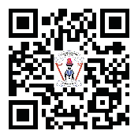

Dibaji
Kitabu hiki cha Kiswahili Shule za Sekondari kimeandikwa mahususi kwako mwanafunzi wa Kidato cha Kwanza wa Jamhuri ya Muungano wa Tanzania. Kitabu hiki kimeandaliwa kulingana na Muhtasari wa Somo la Kiswahili wa mwaka 2023 uliotolewa na Wizara ya Elimu, Sayansi na Teknolojia. Kitabu hiki ni toleo la pili la Kitabu cha Kiswahili Shule za Sekondari Kidato cha Kwanza cha mwaka 2021 kilichoandaliwa kulingana na Muhtasari wa Somo la Kiswahili wa mwaka 2005 uliokuwa umetolewa na Wizara ya Elimu na Mafunzo ya Ufundi.
Kitabu hiki kimegawanywa katika sura saba: Lugha na utamaduni, Sarufi ya Kiswahili, Matumizi ya kamusi, Kusikiliza mazungumzo, Kusoma kwa ufasaha na ufahamu, Kuwasiliana kwa njia ya mazungumzo, na Kuwasiliana kwa njia ya maandishi.
Maudhui ya kitabu hiki yamewasilishwa kwa njia ya matini, shughuli za kufanya, vielelezo, pamoja na picha ambazo zinachochea ujenzi wa umahiri unaokusudiwa kwa kila sura. Vilevile, katika kila sura kuna mazoezi yenye lengo la kupima na kujenga uelewa pamoja na ujuzi katika somo hili. Pia, unapaswa kuandaa mkoba wa kazi kwa ajili ya kutunza kazi mbalimbali zinazotokana na ujifunzaji. Hivyo basi, unapaswa kufanya mazoezi na shughuli zote zilizomo kwenye kitabu hiki pamoja na shughuli nyingine utakazopewa na mwalimu.
Jifunze zaidi kupitia Maktaba Mtandao https://ol.tie.go.tz au ol.tie.go.tz
